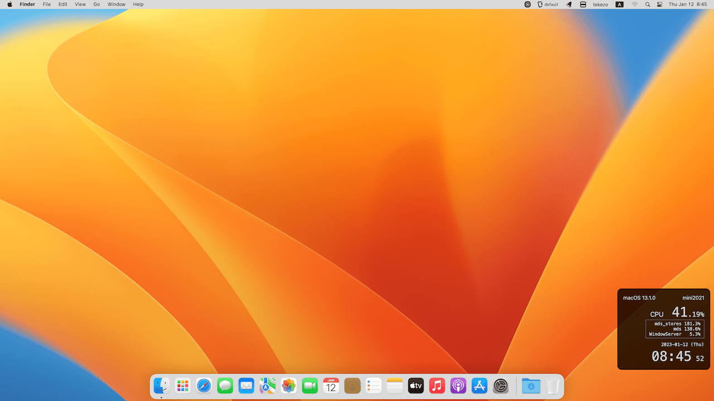

TrueWidget
TrueWidget
A macOS app that displays the system status on screen at all times


TrueWidget works on macOS 11 Big Sur or later.
TrueWidget displays macOS version, CPU usage and local time on screen at all times.
✨ Check macOS version and host name at a glance when using multiple
versions of macOS on your Mac.
✨ The CPU usage can be monitored not only by instantaneous usage, which
can vary widely, but also by a moving average, which is less likely to be
blurred, to determine recent trends.
✨ The local time can be displayed in a size that is easy to read unlike
the time on the menu bar, which is not legible when using high
resolution.
✨ Supports multi-display environments and allows control over which
screen is used for display.

Display Items Customization